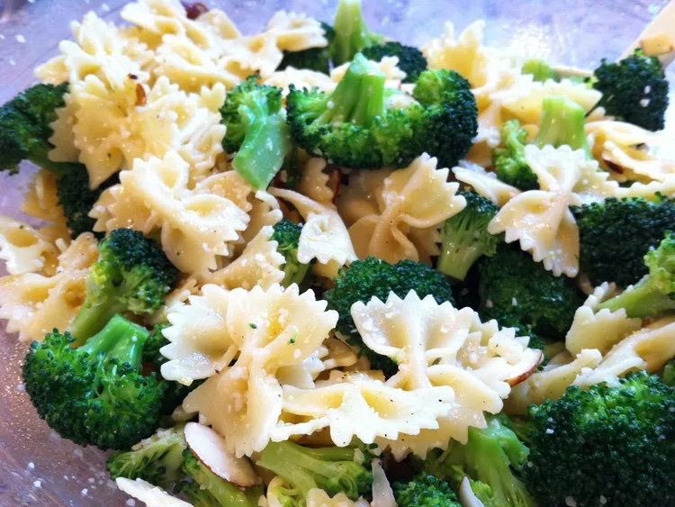

Home
Bow Tie Pasta with Broccoli, Garlic, and Lemon

Description
Pasta tossed with a garlic & lemon sauce. So simple, yet so delicious.
Ingredients
- 1/4 cup extra-virgin olive oil
- 3 cloves garlic, minced
- 3 tablespoons freshly squeezed lemon juice
- 1/2 teaspoon salt
- 1/8 teaspoon ground black pepper
- 1 (8 ounce) package farfalle (bow tie) pasta
- 1 head broccoli, cut into florets
- 1/4 cup grated Parmesan cheese
Steps
- Warm olive oil in a small frying pan over low heat. Slowly cook garlic in oil until golden, about 2 to 3 minutes. Be very careful not to burn garlic. Stir in lemon juice, and season with salt and pepper.
- Meanwhile, cook pasta in a large pot of boiling salted water. About 5 minutes before pasta is done, drop broccoli into the pasta water. Continue to cook until pasta is cooked and broccoli is crisp-tender. Drain.
- Toss pasta, broccoli, and lemon sauce in a large bowl. Sprinkle with grated Parmesan cheese.
Home